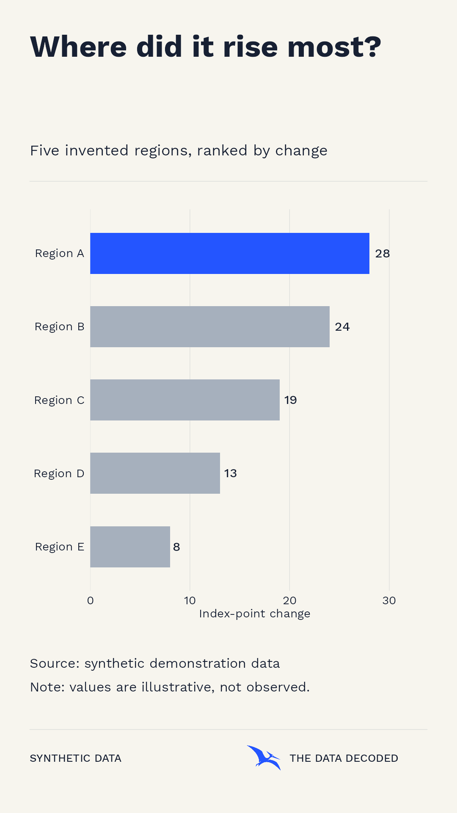
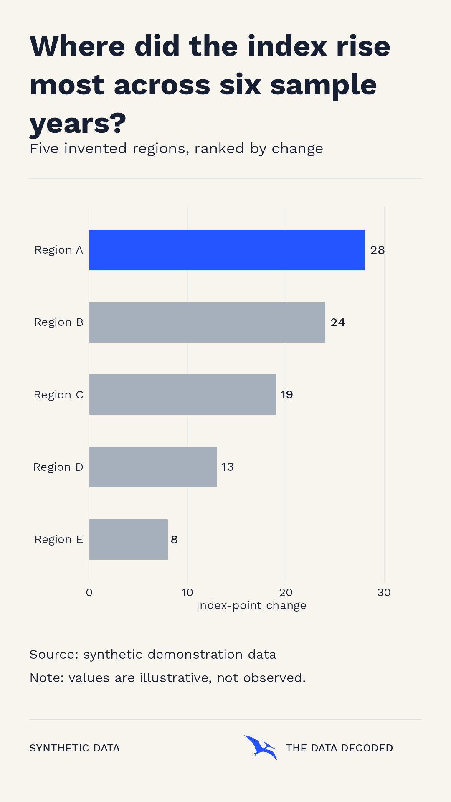
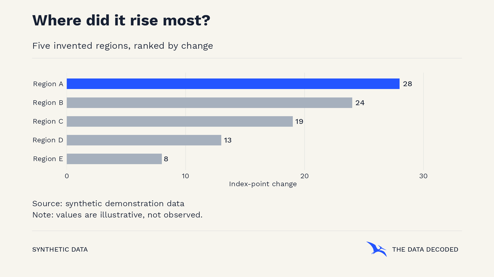
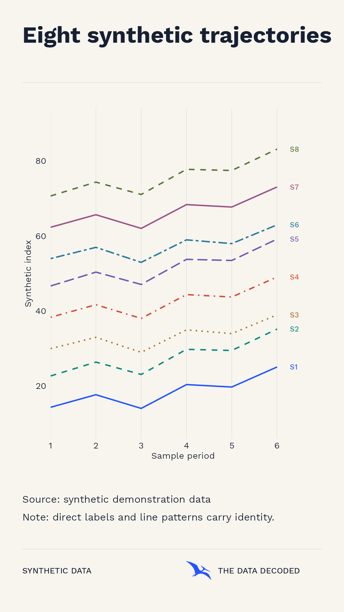
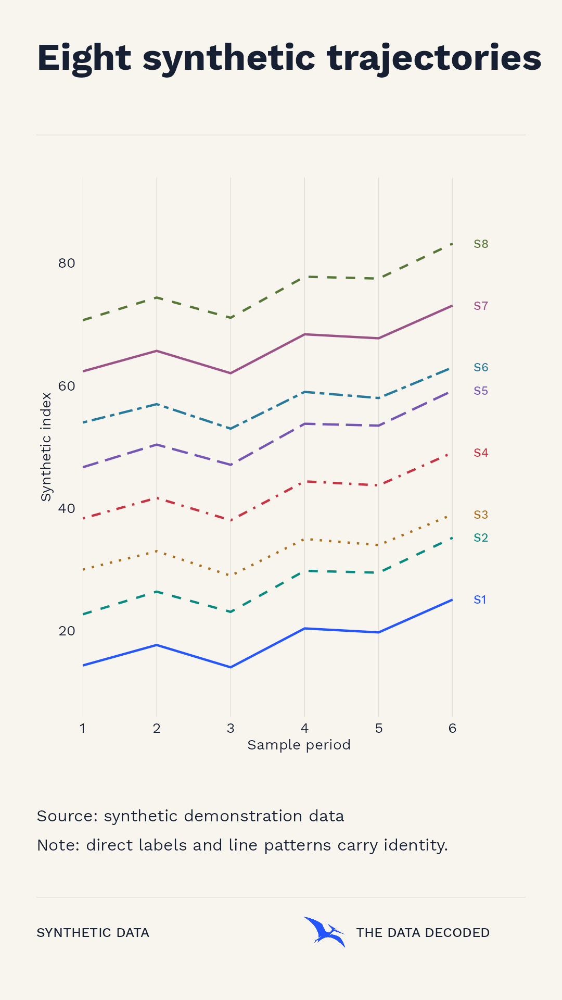
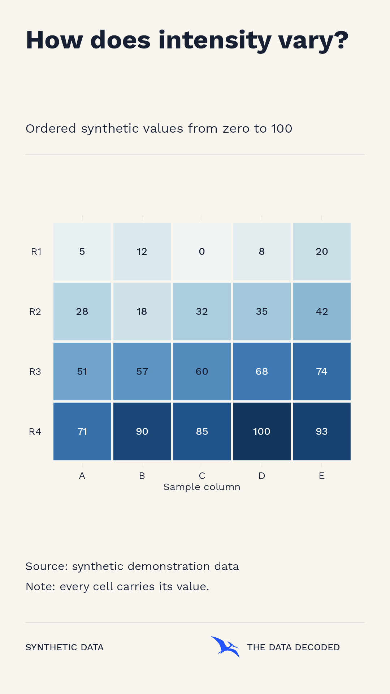

Warm accent and categorical tests
Each eight-color proposal replaces only the fourth categorical hue. The same synthetic line chart below compares vermilion #D94A38 with crimson #C83242. Twelve and sixteen categories are stress tests, with numeric keys so color is never the only identifier.
Colors are frozen in palette.json. Simulated colors and Oklab nearest-pair distances are diagnostic, not pass/fail accessibility scores. Neither variant is approved as a production palette.
Direct R exports
The frame reserves positions for a title, optional subtitle, sources and notes, and a modest logo/channel footer. The plot itself can change shape and method. Non-highlighted filled bars now use provisional light context #A6B0BD; the highlighted bar stays #2455FF and labels stay dark ink. Open the SVG to inspect editable vector chart geometry and embedded Work Sans fonts.
Short title
Work Sans Bold in a compact title area.
View SVG

Wrapped title
Same data, with a long three-line title and reserved subtitle.
View SVG

Landscape frame
The same ranked data and proportional pterosaur footer on a 1920 × 1080 canvas.
View SVG

Vermilion accent
Eight directly labeled synthetic series. Categorical slot four is vermilion.
View SVG

Crimson accent
Identical data and layout; categorical slot four is crimson.
View SVG

Sequential heatmap
Every synthetic cell includes its value.
View SVG

At 390-pixel phone width
Representative full portrait chart displayed inside a phone-width frame. Use the full-size link for small labels.
What remains open
Choose between vermilion and crimson after reviewing real subject matter. Dense categorical palettes still need direct labels, grouping or patterns. The Georgia title comparison is retained only as an archive; Work Sans is the sole approved family.
See study notes for font source and license, Windows use, SVG portability, contrast, and palette limitations.